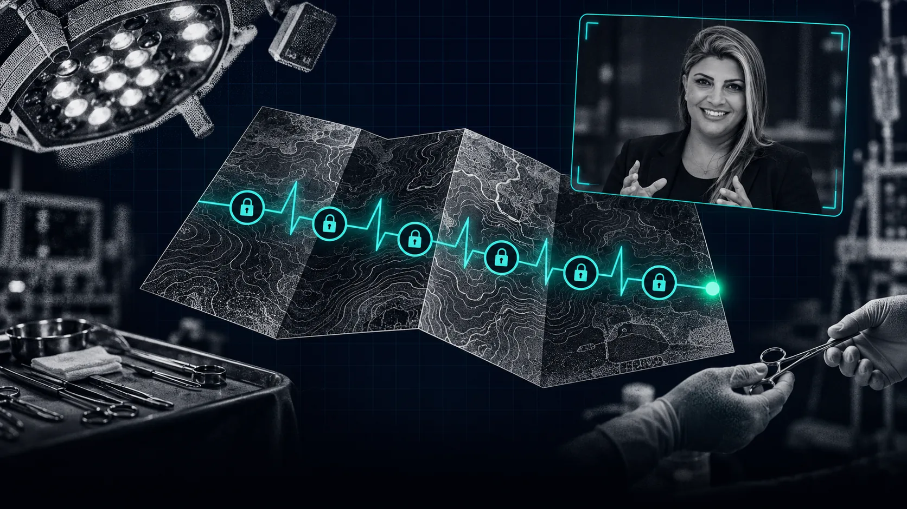
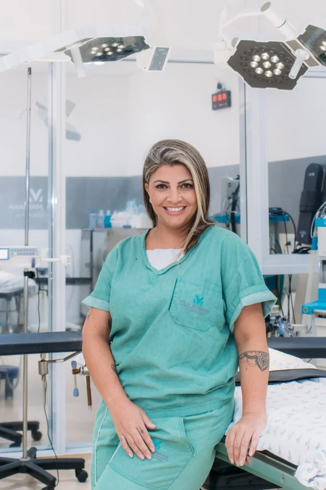
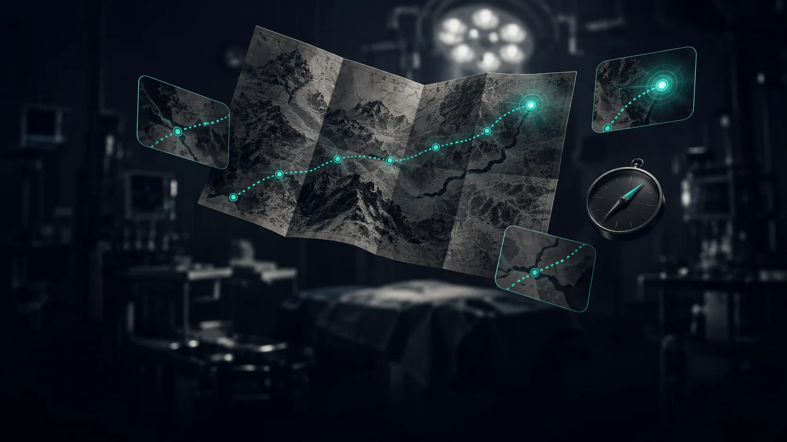

01
Descubra os 6 passos para sair do zero e construir o caminho até a sua primeira oportunidade na instrumentação cirúrgica.
Entenda em poucos minutos o que é o Gancho da Virada
No Gancho da Virada, você vai conhecer o mapa que eu gostaria de ter recebido quando comecei: uma jornada construída a partir da minha própria trajetória e que hoje utilizo para direcionar outros instrumentadores.
Você recebe acesso imediato a 3 aulas de preparação e participa de um encontro ao vivo, onde eu vou revelar e ensinar os 6 Passos da Virada.
Você terminou sua formação e percebeu que o certificado não responde algumas das perguntas mais importantes:
Com quem eu devo falar?
Como consigo minha primeira oportunidade?
Como alguém vai confiar em mim se ainda não tenho experiência?
Devo procurar diretamente os cirurgiões?
Qual deveria ser o meu próximo movimento?
Muitos instrumentadores não ficam parados por falta de capacidade. Ficam parados porque ninguém mostrou o caminho entre a formação e a primeira oportunidade.
E eu organizei esse caminho em 6 passos.
Talvez você já tenha percorrido alguns sem perceber.Talvez esteja tentando pular uma etapa.Ou talvez esteja travado justamente no ponto que está impedindo você de avançar.
No encontro ao vivo do Gancho da Virada, eu vou abrir esse mapa e mostrar cada uma dessas etapas. Ao final, quero que você consiga responder:
Assim que sua inscrição for confirmada, você recebe acesso imediato às 3 aulas de preparação. Elas vão preparar sua visão sobre o mercado para que você chegue ao encontro entendendo os fundamentos necessários para aproveitar o mapa.
ACESSO IMEDIATO
É aqui que eu vou revelar o mapa. Vamos percorrer os 6 passos, entender como eles se conectam e ajudar você a identificar em qual ponto dessa jornada está hoje.
22 de outubro • 20h • Online e ao vivo
Quando eu comecei, ninguém me entregou um mapa. Eu precisei descobrir na prática como esse mercado funcionava, quais movimentos faziam diferença e como construir meu espaço.
Com a minha própria trajetória e, depois, direcionando outros instrumentadores, comecei a enxergar as etapas que se repetiam. Foi assim que nasceu o Mapa dos 6 Passos da Virada.
Ter um mapa muda completamente a forma como você percorre o caminho.
Acesso imediato após a confirmação da inscrição.
22 de outubro às 20h. Online e ao vivo.

DE R$ 297,00
6x de R$8,82
ou R$ 47,00 à vista
R$ 47,00 à vista · ou 6x de R$ 8,82
Pagamento seguroAcesso imediato
Não. O Gancho apresenta direcionamento e uma jornada estruturada para ajudar você a compreender os movimentos envolvidos na construção do seu espaço no mercado. Não existe garantia de contratação, equipe, cirurgia ou prazo para resultados.
O Gancho não substitui sua formação técnica. O foco está justamente no que acontece depois da formação e no caminho de entrada no mercado.
Imediatamente após a confirmação da inscrição.
O Mapa dos 6 Passos da Virada será revelado e explicado durante o encontro ao vivo.
[DEFINIR RESPOSTA — informar se o encontro ao vivo ficará disponível gravado e por quanto tempo.]
Sim. Se você está próximo de concluir sua formação e quer começar a compreender a jornada de entrada no mercado, também pode participar.
Eu organizei essa jornada em 6 passos.
Talvez você já tenha percorrido alguns. Talvez esteja travado em um deles. Talvez esteja mais perto do que imagina.
Mas primeiro você precisa descobrir onde está.